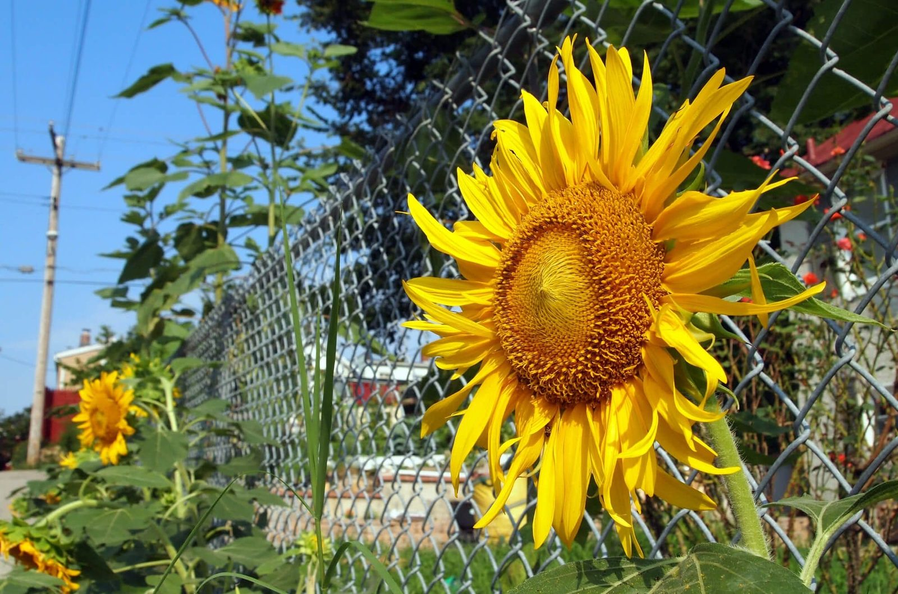

In This Guide
- Metal fences come in eight common types: aluminum, steel, wrought iron, chain link, corten steel, stainless steel, expanded metal, and wire mesh.
- Aluminum does not rust. Steel and iron rust when the finish fails, so their coating and upkeep matter most in Louisiana humidity.
- Specialty metals such as corten and stainless steel suit a modern look, but each has trade-offs worth asking about before you commit.
- Match the metal to the job: privacy, security, looks, upkeep, and budget all point toward different types.
Metal fencing is a family of materials, and each one behaves differently. Some are light and rustproof, some are heavy and traditional, and a few are chosen for their industrial look. Knowing the differences helps you pick a fence that suits your property and your patience for upkeep.
Big Easy Fence installs a range of metal fences for homes and businesses. This guide covers the eight types you are most likely to come across, what each does well, and what to watch for.
The Three Classics
Most homeowners choosing a metal fence end up comparing these three.
Aluminum
Aluminum fencing is lightweight and does not rust, which makes it a natural fit for humid weather. It comes in many styles, colors, and finishes, and the sleek look suits both modern and traditional homes. It is not as strong as steel or iron, and its coating is what keeps it looking good, so chips should be touched up.
Steel
Steel fencing is strong and secure, and it comes in ornamental and tubular designs. It rusts when the finish wears through, so galvanized and powder-coated versions are the sensible choice. It is heavier than aluminum, and scratches should be treated quickly so they do not turn into rust spots.
Wrought Iron
True wrought iron is hand-forged and made for ornate, traditional designs with scrolls and patterns. Many fences sold as wrought iron today are actually fabricated steel made to look like it, so ask what your fence is made of. Wrought iron fences are heavy, and they need repainting and rust treatment as the finish ages.
Chain Link and Wire Mesh
These two are made from wire rather than solid bars, and they are the practical end of the range.
Chain link is galvanized steel wire woven into a diamond mesh. It is a cost-effective, familiar choice for yards, schools, and commercial sites, and the galvanized coating slows rust. It is not the most decorative option, but slats, privacy screens, or plantings improve both privacy and looks.

Wire mesh uses a grid of welded or woven wire, often coated with PVC or powder coating for weather resistance. The grid size can vary, which changes how much visibility, airflow, and privacy you get. Mesh panels are common around gardens, farm properties, and commercial sites where visibility and ventilation matter.
Specialty Metals
These types are less common on homes, and each has a specific look and a specific set of trade-offs.
Corten Steel
Corten, also called weathering steel, is designed to form a layer of rust that stays put and slows further corrosion. That gives it a warm, earthy look. The patina forms best when the steel gets a mix of wet and dry weather, and runoff can stain concrete, pavers, and nearby siding. In a humid, salty environment, ask how it will perform before you commit.
Stainless Steel
Stainless steel resists corrosion and can be polished to a shine or finished in a brushed or matte surface. It is a sleek choice and generally costs more than other metal fencing. Stainless is not stain-proof, and the grade matters, particularly near salt air, so ask which grade is being quoted.
Expanded Metal
Expanded metal is a sheet that has been cut and stretched into a diamond pattern. It is strong, allows airflow, and gives partial visibility. It appears on industrial and high-security sites, and on contemporary homes that want a distinctive look. It can be made in aluminum, steel, or stainless steel.
Comparing the Types
| Type | Look | Upkeep Focus | Common Use |
|---|---|---|---|
| Aluminum | Sleek and ornamental | Keep the coating intact | Yards, pools, front boundaries |
| Steel | Strong and clean | Protect the finish from rust | Security and gates |
| Wrought Iron | Ornate and traditional | Repaint and treat rust | Front yards and entries |
| Chain Link | Plain and practical | Check the galvanizing and posts | Backyards and commercial sites |
| Corten and Stainless Steel | Rusty patina, or polished metal | Runoff staining, or choosing the right grade | Modern and contemporary designs |
| Expanded Metal and Wire Mesh | Geometric pattern or open grid | Keep the coating intact | Security, gardens, and industrial sites |
Choosing a Metal for Louisiana Conditions
Humidity, heavy rain, heat, and salt air shape which metal lasts and how much care it needs. Aluminum, galvanized steel, and well-coated iron are common choices because coatings do so much of the protecting. Whatever you choose, the finish is the first line of defense, and it is worth asking how it is applied, how it can be repaired, and what upkeep you should plan for.
Then think about the job. Security, privacy, appearance, and budget all point toward different types. A pool boundary and a commercial lot make different demands than a front-yard ornamental fence.
Next Steps
Narrow your list to two or three types, then ask for quotes on each. Check the rules on height and materials with your city or parish and your HOA before you commit. If you would like to talk through the choices, our residential fencing page explains how a project works, and the team can help you compare the options side by side.
Which Metal Fits Your Property?
Tell us how you plan to use the fence, and we will help you compare the metals that make sense for your yard.